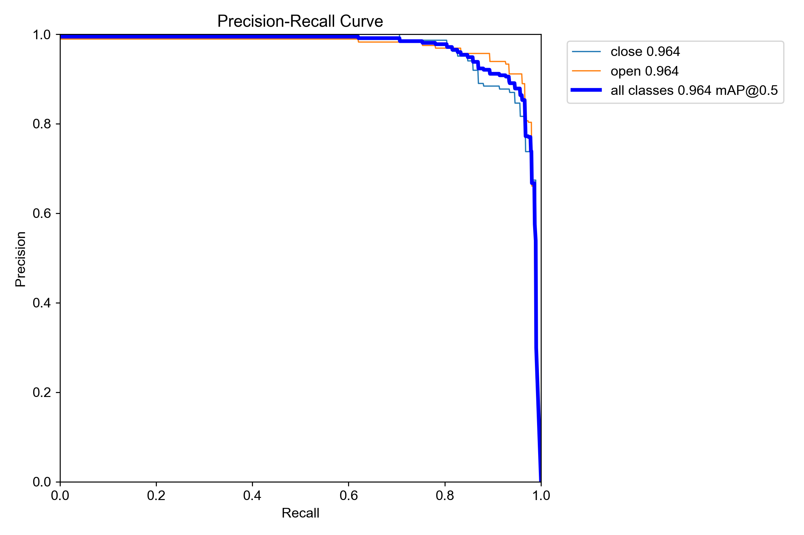
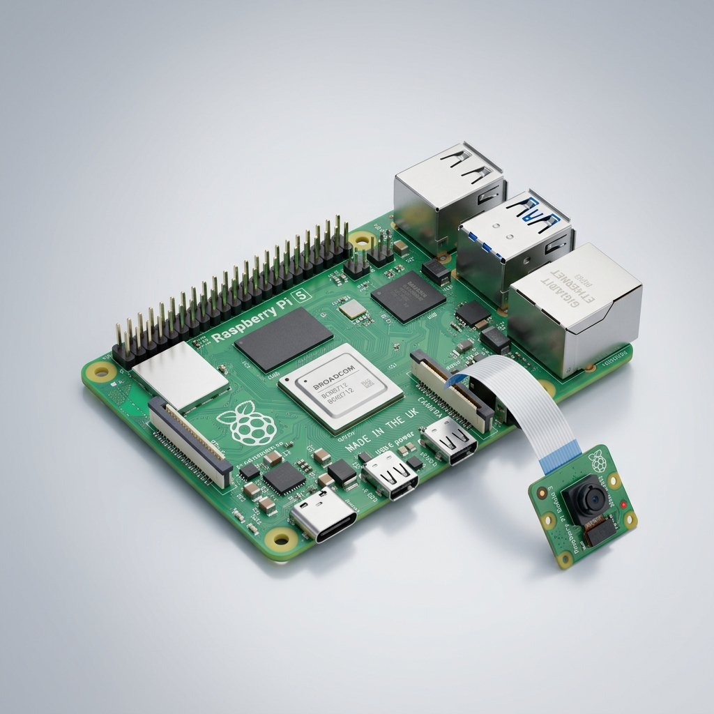

Real-Time Driver
Drowsiness Detection
Utilizing YOLOv11n for Embedded Computer Vision Systems
Crischan Larita
Primary Researcher
Ike Russel
Technical Lead
Introduction
Driver drowsiness is a critical global safety issue. This project presents a robust monitoring system using the YOLOv11 nano architecture. Trained on 1,419 specialized facial state images, our model achieves a 95.49% mAP@50. The system is optimized for real-time edge inference on a Raspberry Pi, providing a non-intrusive, scalable solution for vehicular safety.
The Problem
Fatal Road Accidents
Fatigue contributes to a significant percentage of worldwide vehicular fatalities.
Intrusive Sensors
Traditional physiological monitoring (EEG/Heart rate) is impractical for daily commutes.
Computational Limits
Existing AI solutions often require high-end GPUs, making them unsuited for in-car integration.
Significance of the Study
Road Safety Improvement
Provides a low-cost, non-intrusive alternative to prevent accidents caused by human fatigue.
Edge AI Advancement
Demonstrates the feasibility and limits of deploying state-of-the-art YOLOv11 models on microcomputers.
Scalable Solutions
Offers a blueprint for integrating computer vision into existing vehicle infrastructure without massive hardware overhead.
Project Objectives
- 🎯To develop a high-precision eye-state classification model using YOLOv11.
- 🎯To curate and pre-process a dataset specifically for driver facial features.
- 🎯To optimize the model for low-latency inference on ARM-based edge hardware.
- 🎯To validate system performance in real-time, non-intrusive environments.
System Methodology
1. Data Pipeline
Augmentation & Splitting (80/10/10)
2. Model Training
Fine-tuning YOLOv11n on Custom Classes
3. Optimization
Weight Export (best.pt) to Edge Environment
YOLOv11 Nano Core
Optimized for Apple Silicon & Raspberry Pi
Data Collection & Split
Data sourced from Roboflow Universe. All images were normalized to 640x640 resolution. Classes represent binary alertness states: Open (Alert) and Closed (Drowsy).
Hyperparameters
Model Type
YOLO11n
Epochs
50
Batch Size
16
Image Size
640px
Hardware
Apple MPS
Framework
Ultralytics
Quantitative Results
mAP @ 50
95.49%
Recall
93.54%
Precision
89.94%
mAP @ 50-95
62.53%
Confusion Matrix & PR Curve

Fig 1. Normalized Confusion Matrix

Fig 2. Precision-Recall Curve
Training Convergence

Fig 3. Training/Validation Loss and Metric Progression
Sample Detections

Fig 4. Validation Batch Predictions (Eye State Localization)
Raspberry Pi Integration

- 🍓Hardware: Raspberry Pi 5 / 4B
- ⚠️Performance Finding: The device struggles with real-time throughput (~3-5 FPS).
- ⚙️Constraint: High CPU utilization causes noticeable detection latency.
- 💡Recommendation: Use an AI HAT (e.g., Raspberry Pi AI Kit with Hailo-8L) for hardware acceleration.
The model achieves smooth frame rates on edge hardware by leveraging the YOLOv11 nano architecture's efficiency.
Conclusion & Future Work
✅ YOLOv11n provides superior detection accuracy but high computational demand.
❌ Hardware Limitation: Standalone Raspberry Pi exhibits low FPS, hindering real-world deployment.
🔭 Future Work: Integration of an AI HAT or Hailo-8L NPU to achieve 30+ FPS real-time performance.
Selected References
[1] Ultralytics, "Ultralytics YOLOv11," 2024. [Online]. Available: https://github.com/ultralytics/ultralytics
[2] J. Redmon, S. Divvala, R. Girshick, and A. Farhadi, "You Only Look Once: Unified, Real-Time Object Detection," in CVPR, 2016, pp. 779-788.
[3] Roboflow Universe, "Driver Facial State Dataset," 2024. [Online]. Available: https://universe.roboflow.com
Thank You
Questions or Technical Inquiries?
Crischan Larita | Ike Russel
Department of Computer Applications
Mindanao State University - Iligan Institute of Technology